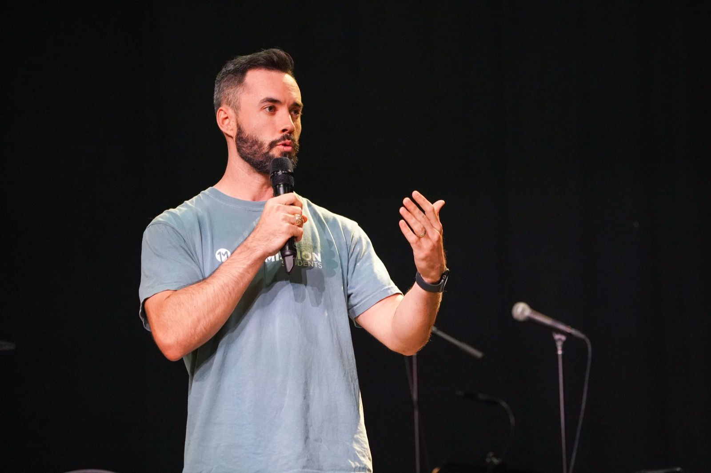

Portfolio Competency
DTS values contextualized, effective communication of biblical and theological truth by a variety of means for personal and corporate transformation.

By April 1, 2027, I will have met with a former lead pastor five times to do a sermon review and improve my preaching.
I will have my sermons recorded on YouTube, use a sermon evaluator worksheet provided by my former pastor, and schedule meetings on our calendar.
By September 1, I need to text Tim to schedule times to meet, and we need to set a meeting place.
A large part of my role moving forward is teaching and preaching, so evaluation from a seasoned pastor will benefit me and our church.
We will meet once each in September, October, November, February, and March.
I will work with my lead pastor to develop the first sermon series of the year, starting January 3, 2027.
We will keep a scope and sequence document tracking passage and idea for the series, and schedule two meetings to discuss and plan, using our shared calendar and SharePoint.
I will spend time praying for where God would lead us for the series, read the book of the Bible at least five times, and chart the book.
We want our church to grow in their ability to understand Scripture and what God is leading them to do based on what a given passage means.
Start praying by October 5. Schedule our first planning meeting for October 19 and begin reading afterward. Schedule our final meeting to complete the scope and sequence by November 14.
Completed worksheets from five sermon reviews with a former lead pastor, used to evaluate and sharpen my preaching.
View Artifact →The planning document tracking passages and ideas for the first sermon series of the year, developed alongside our lead pastor.
View Artifact →